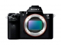
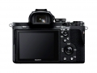
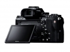
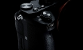
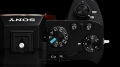

器材库 > 35mm画幅可换镜头数码相机 > α7 II

规格总览
产品类型
35mm画幅可换镜头数码相机
发布日期
2014-11-20
厂家推荐价格
189,880.00 （日元）
影像规格
影像传感器
Exmor CMOS
影像传感器尺寸
35.8 × 23.9mm
总像素
2470万万
有效像素
2430万万
影像处理器
BIONZ X
低通滤镜
有
最大解像度
6000 x 4000
静态图像尺寸
:2 ]6000 x 4000 (2400 万像素)，APS-C：3936 x 2624 (1000 万像素)，[16:9 ]6000 x 3376 (2000 万像素)，APS-C，大：3936 x 2216 (870 万像素)
静态图像格式
JPEG, RAW, RAW+JPEG
画幅比
3:2
短片尺寸
1920 x 1080(60P)
短片格式
MPEG4, AVCHD, XAVC S
短片音效
单声道
防抖系统
五轴防抖（主要升级）
除尘系统
超声波除尘
镜头和对焦
镜头卡口
Sony E
对焦系统类型
混合自动对焦（相位侦测/对比度检测自动对焦）
对焦点
117点
对焦模式
单次自动对焦(AF-S)、连续自动对焦 (AF-C)、直接手动 (DMF)、手动对焦
AF辅助灯
有
手动对焦
支持
曝光控制
测光系统
1200区光评价测光
测光模式
中央重点测光, 多分区评价测光, 点测光
测光范围
-1到20EVEV
曝光模式
P（程序自动曝光）, 场景选择, A（光圈优先自动曝光）, S（快门速度优先自动曝光）, M（手动测光曝光）, iAUTO, 全景扫描, 视频
快门类型
电子控制，纵走式，焦平面快门
快门速度
30-1/8000
闪光同步速度
1/250秒
曝光补偿
±5EV以1/3EVEV级调整
ISO感光度
6400, 可扩展至50-25600
连拍
连拍速度为2.5张/秒，高速连拍为5张/秒
闪光灯
内置闪光灯
无
取景器/显示屏
取景器
彩色XGA OLED电子取景器
取景范围
100%
取景放大倍率
0.71倍倍
屈光度调节范围
-4.0 至 +3.0 m-1
LCD类型
TFT LCD
LCD尺寸
3.0英寸
LCD像素
92万
LCD特性
翻转屏
Live View
有
文件输入/输出
存储卡
MS/MS PRO记忆棒, SD/SDHC, SDXC
无线功能
Wi-Fi, NFC
电源
电池
锂离子充电电池NP-FW50
续航能力
约270 张 (取景器) / 约350 张 (LCD )
机身规格
材质
铝合金
颜色
黑色
尺寸
126.9x95.7x59.7mmmm
重量
599g（含电池、记忆卡）g
一起飞2015-09-11 09:164.81 分
操作性 5.00功能性 5.00美观性 4.50趣味性 5.00耐用性 5.00性价比 4.50解像力 5.00色彩还原 4.50
一起飞2015-09-11 09:14
wingszero2015-06-15 14:54
bufanlin2014-12-30 16:144.75 分
操作性 4.50功能性 5.00美观性 4.50趣味性 5.00耐用性 4.50性价比 4.50解像力 5.00色彩还原 5.00
产品图 / 样片




评测 / 相关文章
- 详细内容 （存档）
- 稳定清晰视野 索尼α7II详细评测 （存档）
- ［试用］索尼微单α7II评测样张 （存档）
- ［资讯］内置5轴防抖 索尼α7II真机外观图赏 （存档）
- ［资讯］加入五轴防抖 索尼正式发布全画幅微单α7II （存档）
- ［资讯］索尼α7 II （存档）
相关文章
- ［试用］稳定清晰视野 索尼α7II详细评测 （存档）
- ［试用］索尼微单α7II评测样张 （存档）
- ［资讯］内置5轴防抖 索尼α7II真机外观图赏 （存档）
- ［资讯］急就章 索尼α7 II究竟升级了些什么东西 （存档）
- ［资讯］加入五轴防抖 索尼正式发布全画幅微单α7II （存档）
- ［资讯］索尼α7 II （存档）
- ［试用］索尼A7II人像拍摄深入使用感受 （原站已下线）
- ［试用］索尼微单A7M2点评 （原站已下线）